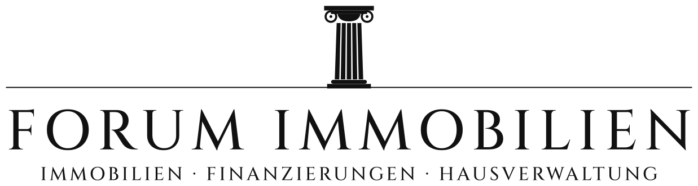

Forum Immobilien · Logo-Konzepte, Runde 1
Jedes Konzept auf Weiß, auf Dunkelblau, einfarbig, als Favicon (64/32/16 px) und klein. Säule, Name und Blau bleiben überall erhalten.
A · Verfeinert
Am nächsten am Original. Feinere Schrift mit mehr Luft, echte ionische Säule mit Voluten, Unterzeile in gesperrten Versalien zwischen Haarlinien.

B · Gold-Kapitell
Wie A, aber Kapitell, Basis und Unterzeile in einem gedämpften Messington. Ein kleiner warmer Akzent, der das Blau edler wirken lässt.

C · Portal
Die Säule steht in einem Rundbogen, wie ein Eingang. Eigenständiges Zeichen, das auch allein funktioniert (Schild, Social Media).
D · Monogramm F
Die Säule bildet den Stamm eines F. Modern und markant, entfernt sich aber am weitesten vom heutigen Logo.
E · Römische Inschrift
Schrift nach römischen Inschriften, passend zu „Forum“. Säule zentriert darüber, wie ein Siegel. Wirkt am feierlichsten.



F · Original, nur sauber
Das heutige Logo fast unverändert, nur mit der neuen Säule. Sicher, aber kaum ein eigener Touch.